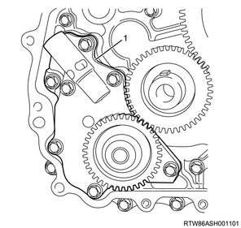
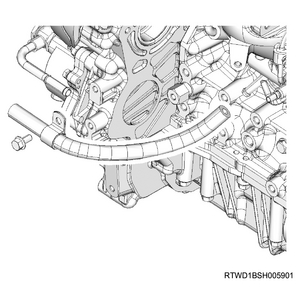
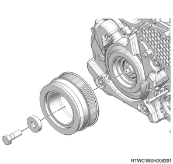
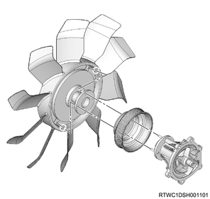

Oil pump assembly installation (4JK1)
1. Oil pump assembly installation
1. Apply the engine oil to the oil pump gear.
2. Install the oil pump to the timing gear case.
Tightening torque： 25 N・m { 2.5 kgf・m / 18 lb・ft }

- Oil pump
2. Gear case cover installation
1. Apply liquid gasket to the timing gear case.
Note
- Apply ThreeBond 1207B to the area indicated in the diagram.
Caution
- Within 5 minutes of applying the liquid gasket, install the cover.

- Liquid gasket application area
2. Install the gasket to the gear case cover.
Caution
- Do not reuse the gasket.
3. Install the gear case cover to the timing gear case.
Tightening torque： 8 N・m { 0.8 kgf・m / 71 lb・in }

3. Cover installation
1. Install the cover to the gear case cover.
Tightening torque： 10 N・m { 1.0 kgf・m / 89 lb・in }

4. Vacuum pump assembly installation
1. Install the vacuum pump assembly to the gear case cover.
Tightening torque： 25 N・m { 2.5 kgf・m / 18 lb・ft }
2. Install the vacuum pump oil pipe to the vacuum pump assembly and the cylinder block.

Tightening torque： 12 N・m { 1.2 kgf・m / 106 lb・in }
3. Install the vacuum hose to the vacuum pipe and the vacuum pump assembly.
Tightening torque： 25 N・m { 2.5 kgf・m / 18 lb・ft }

5. Power steering oil pump assembly installation
1. Install the power steering oil pump to the timing gear case.
Tightening torque： 25 N・m { 2.5 kgf・m / 18 lb・ft }

- Power steering oil pump
- Nut
2. Install the power steering oil hose to the bracket.

- Bracket
6. Crankshaft pulley installation
1. Install the crankshaft pulley to the crankshaft.
Note
- Align the crankshaft pulley to the key of the crankshaft and install it.
- Hold the fly wheel ring gear in a stopped state, and lock the crankshaft when tightening the crankshaft pulley bolt.
Caution
- Take care not to damage the crankshaft damper pulley boss portion.
- Make sure to use a new crank pulley bolt and washer.
Tightening torque： 294 N・m { 30.0 kgf・m / 217 lb・ft }

7. Noise cover installation
1. Install the noise cover to the timing chain lower cover.
Tightening torque： 10 N・m { 1.0 kgf・m / 89 lb・in }

8. Fan shroud installation
1. Install the fan guide to the radiator.
Note
- Install the lower fan guide together with the fan shroud.
9. Fan pulley installation
1. Install the fan pulley to the water pump assembly.
10. Cooling fan clutch installation
1. Install the cooling fan clutch to the water pump assembly.
Note
- Install the part together with the cooling fan.

Tightening torque： 8 N・m { 0.8 kgf・m / 71 lb・in }
11. Fan guide installation
1. Install the fan guide to the radiator.
Note
- Install the upper fan guide.

- Upper fan guide
- Clip
- Lower fan guide
- Fan shroud
12. Cooling fan belt installation
1. Install the cooling fan belt to the pulley.
13. Cooling fan belt adjustment
1. Adjust tension to the specified value using a tension meter.
Note
- Turn the adjust bolt to adjust the tension.
2. Check tension of the cooling fan belt.
Note
- When adjusting the amount of flex to the original value
- Apply a load to measurement point 1 of the cooling fan belt and adjust the amount of flex.
Load： 98 N { 10 kg / 22 lb }
| Position of belt tension | |
| Amount of flex | |
| New product | ： 5.0 to 6.0 mm { 0.197 to 0.236 in } |
| Reuse | ： 7.0 to 7.8 mm { 0.276 to 0.307 in } |
Note
- When adjusting the tension by using a sonic tension meter
- Measure the frequency at measurement point 1 with a sonic tension meter.
| Position of the belt tension | |
| Frequency | |
| New | ： 207 to 231 Hz |
| Reuse | ： 176 to 190 Hz |

- Measurement point 1
- Measurement point 2
- Measurement point 3
- Measurement point 4
- Adjust bolt, A/C compressor
Note
- After adjusting the tension, tighten the tensioner fixing nut.
Tightening torque： 41 N・m { 4.2 kgf・m / 30 lb・ft }
Note
- If the cooling fan belt is replaced with a new one, make the new cooling fan belt fit in to cope with initial elongation.
- After making the cooling fan belt fit in, adjust its tension once again.
14. A/C compressor drive belt installation
1. Install the A/C compressor drive belt to the pulley.

- A/C compressor drive belt
15. A/C compressor drive belt adjustment
1. Adjust tension to the specified value using a tension meter.
Note
- When adjusting the amount of flex to the original value
- Apply a load to measurement points 2, 3, and 4 of the A/C compressor drive belt and adjust the amount of flex.
Load： 98 N { 10 kg / 22 lb }
| Measurement point 2 | |
| Amount of flex | |
| For a new product | ： 12.4 to 16.4 mm { 0.488 to 0.646 in } |
| When reused | ： 16.5 to 19.1 mm { 0.650 to 0.752 in } |
| Measurement point 3 | |
| Amount of flex | |
| For a new product | ： 12.5 to 16.5 mm { 0.492 to 0.650 in } |
| When reused | ： 16.5 to 19.1 mm { 0.650 to 0.752 in } |
| Measurement point 4 | |
| Amount of flex | |
| For a new product | ： 15.9 to 20.7 mm { 0.626 to 0.815 in } |
| When reused | ： 20.7 to 23.7 mm { 0.815 to 0.933 in } |
Note
- When adjusting the tension by using a sonic tension meter
- Measure the frequency at measurement points 2, 3, and 4 with a sonic tension meter.
| Measurement point 2 | |
| Frequency | |
| For a new product | ： 92 to 112 Hz |
| When reused | ： 80 to 92 Hz |
| Measurement point 3 | |
| Frequency | |
| For a new product | ： 92 to 112 Hz |
| When reused | ： 79 to 91 Hz |
| Measurement point 4 | |
| Frequency | |
| For a new product | ： 70 to 86 Hz |
| When reused | ： 62 to 70 Hz |
- Measurement point 1
- Measurement point 2
- Measurement point 3
- Measurement point 4
- Adjust bolt (A/C compressor drive belt)
Note
- After adjusting the tension, tighten the tensioner fixing nut.
Tightening torque： 41 N・m { 4.2 kgf・m / 30 lb・ft }
16. Radiator upper hose installation
1. Install the radiator upper hose to the water outlet pipe and the radiator.
Tightening torque： 5 N・m { 0.5 kgf・m / 44 lb・in } Hose clip

- Radiator upper hose
17. Intake air duct installation
1. Install the intake air duct to the intake throttle valve and the intercooler.
Note
- Align the marks on the pipe side and hose side.
Tightening torque： 10 N・m { 1.0 kgf・m / 89 lb・in } Bolt
Tightening torque： 4 N・m { 0.4 kgf・m / 35 lb・in } Clamp (Intake throttle side)
Tightening torque： 5 N・m { 0.5 kgf・m / 44 lb・in } Clamp (Intercooler side)

18. Intake air duct installation
1. Install the intake air duct to the turbocharger and the intercooler.
Caution
- Referring to the diagram, face the threaded portion of the clamp toward the engine front.
Tightening torque： 25 N・m { 2.5 kgf・m / 18 lb・ft } Nut, bolt
Tightening torque： 4 N・m { 0.4 kgf・m / 35 lb・in } Clamp (Turbocharger side)
Tightening torque： 5 N・m { 0.5 kgf・m / 44 lb・in } Clamp (Intercooler side)

19. Engine cover installation
1. Install the engine cover to the engine.

- Engine cover
20. Underguard installation
Note
- The following applies to models with an under air deflector.
1. Install the under air deflector to the frame.
Note
- Tighten the clip and the 5 bolts.
Tightening torque： 42 N・m { 4.3 kgf・m / 31 lb・ft }

- Bolt
- Clip
Note
- The following applies to models with front and rear underguard.
2. Install the rear underguard to the frame.
Note
- Tighten the 4 bolts.
Tightening torque： 42 N・m { 4.3 kgf・m / 31 lb・ft }
3. Install the front underguard to the frame.
Note
- Tighten the 5 bolts.
Tightening torque： 42 N・m { 4.3 kgf・m / 31 lb・ft }

- Front underguard
- Rear underguard
- Bolt
Note
- The following applies to models with front and rear underguard and an oil pan guard.
4. Install the rear underguard to the frame.
Note
- Tighten the 4 bolts.
Tightening torque： 42 N・m { 4.3 kgf・m / 31 lb・ft }
5. Install the oil pan guard to the frame.
Note
- Tighten the 4 bolts.
Tightening torque： 90 N・m { 9.2 kgf・m / 66.4 lb・ft }
6. Install the front underguard to the frame.
Note
- Tighten the 5 bolts.
Tightening torque： 42 N・m { 4.3 kgf・m / 31 lb・ft }

- Front underguard
- Oil pan guard
- Bolt oil pan guard
- Bolt
- Rear underguard
21. Coolant filling
1. Replenish the radiator with coolant.
Note
- Use the coolant contains 50 % anti-freeze solution.
- Pour coolant up to the filler neck.
2. Replenish the radiator reserve tank with coolant.
Note
- Pour coolant up to the MAX line.
3. Install the radiator cap to the radiator.
22. Battery ground cable connect
1. Connect the battery ground cable to the battery.
2. Close the engine hood assembly.
3. Lower vehicle.